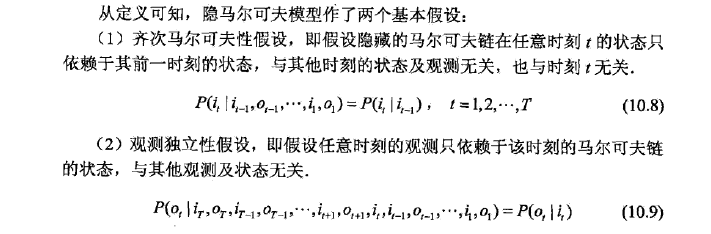
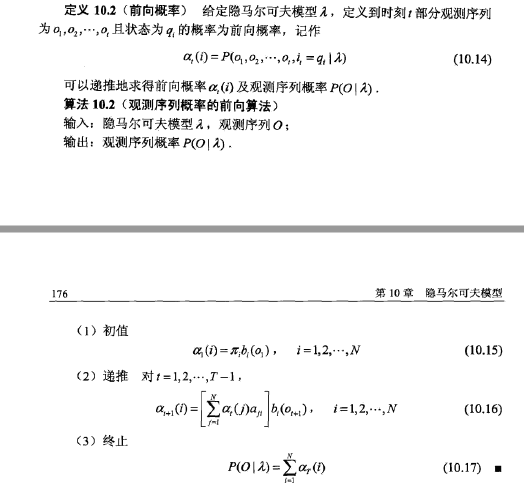
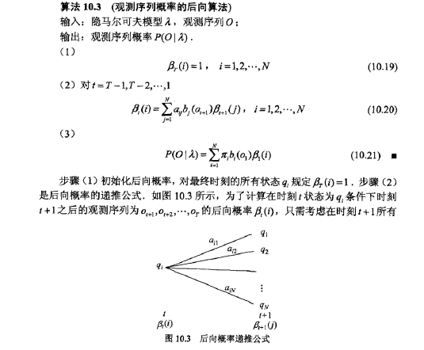

机器学习原理简述
隐马尔可夫模型
概述
隐马尔科夫模型是关于时序的概率模型，描述一个由隐藏的马尔可夫链随机生成不可观测的状态的序列，再由各个状态随机生成一个观测而产生观测的序列的过程。
三要素： 隐马尔科夫模型由初始状态概率向量$\pi$，状态转移概率矩阵A和观测概率矩阵B决定。因此，隐马尔科夫模型可以写成$\lambda = (\pi,A,B)$
隐马尔科夫模型是一个生成模型，表示状态序列和观测序列的联合分布，但状态是隐藏的，不可观测。
隐马尔科夫模型可以用于标注，这是状态对应着标记。标注问题是给定观测序列预测其对应的标记序列。
隐马尔科夫模型的两个基本假设：
- 齐次马尔可夫性假设$a_{ij}$：假设隐藏的马尔可夫链在任意时刻的状态只依赖于前一时刻的状态，与其他时刻的状态和观测无关，也与t时刻无关
- 观测独立性假设$b_j(k)$：假设任意时刻的观测只依赖于该时刻的马尔可夫链的状态，与其他观测和状态无关

概率计算问题
直接法
$P(O,I|\lambda)=P(O|I,\lambda)P(I|\lambda)$
前向算法
$P(O,I|\lambda)=P(O|I,\lambda)P(I|\lambda)$

后向算法
$P(O|I,lambda)$

学习算法
隐马尔科夫模型的学习$\lambda=(\pi,A,B)$，根据训练数据集分为监督学习和无监督学习
- 训练数据包含观测序列和状态序列，属于监督学习，极大似然估计参数
- 训练数据只包含观测序列，属于非监督学习，学习算法为Baum-Welch算法(EM算法)
Baum-Welch算法
隐马尔科夫模型实际上是一个包含隐变量的概率模型
$P(O|\lambda)=\sum_I P(O|I,\lambda)P(I|\lambda)$
预测算法
隐马尔科夫模型的预测算法：近似算法、维特比算法
近似算法
思想：在每个时刻t选择再该时刻最有可能出现的状态$i_t^* $，从而得到一个状态序列，将其作为预测结果
$P(I|O,\lambda)=\frac P(I,O|\lambda) P(O|\lambda)$
优点：计算简单
缺点：不能保证预测的状态序列整体是最有可能的序列，因为预测恶的状态序列可能有实际不发生的部分
维特比算法